---
{
"layout": "note",
"title": "ch3 Vorticity dynamics_part1_circulation & vorticity",
"journal": true,
"section": "Study",
"topic": "Viscous Flow",
"excerpt": "이번 chapter에서는 유체의 회전 에 대해서 살펴보자. 유체의 회전을 나타내는 parameter는 크게 두가지가 존재한다. 1. vorticity, w 유체가 특정 좌표에서 회전크기와 방향을 나타내는 vorticity는 벡터!!!",
"classes": "wide",
"permalink": "/blog/mechanical-engineering/viscous-flow/ch3-vorticity-dynamics-part1-circulation-vorticity/",
"study_area": "Mechanical",
"date": "2024-10-03",
"source_url": "https://jeffdissel.tistory.com/111",
"header": {
"teaser": "/blog/mechanical-engineering/viscous-flow/ch3-vorticity-dynamics-part1-circulation-vorticity/images/img-001.png"
}
}
---
{% raw %}이번 chapter에서는
유체의 회전
에 대해서 살펴보자.
유체의 회전을 나타내는 parameter는
크게 두가지가 존재한다.
1. vorticity, w
유체가 특정 좌표에서
회전크기와 방향을 나타내는
vorticity는 벡터!!!!! 이고,
그 크기는, angular velcoity의 두배이다.
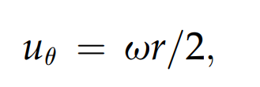
각속도 = u_θ /r
2. Circulation
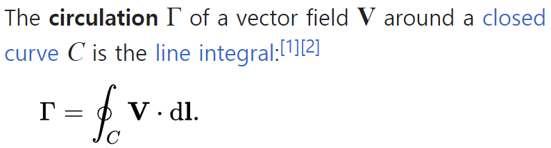
정의를 쉽게 풀어서 생각해보자.
어떠한 폐곡선의 curve C가 존재하고,
폐곡선에서 임의의 미세한 유체 입자를 선택해보자.
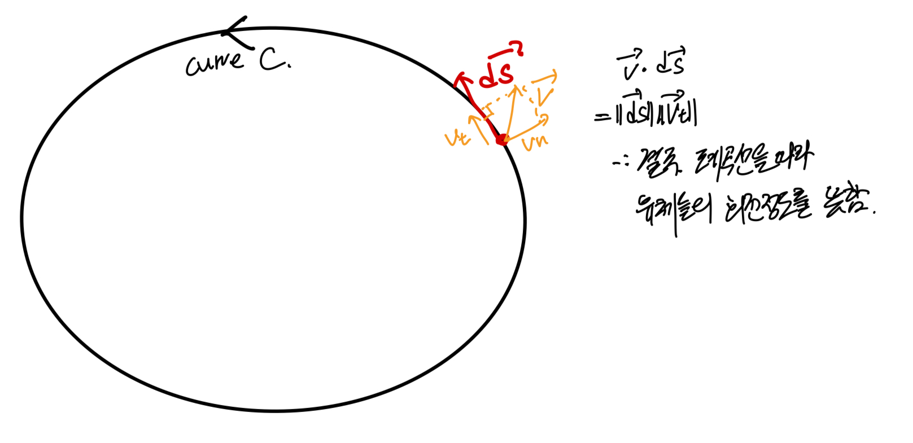
그렇다면, 위 사진처럼
circulation은 결국 폐곡선을 따라서,
곡선의 유체들이 얼마나 회전하는지를 나타낸다.
Stoke's Theorem을 이용해서,
선적분 -> 면적분으로 전환해주자.
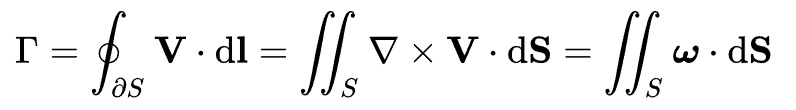
결국 정리해보면,
Vorticity
는 특정위치의 미세한 유체의 회전방향과 크기를 벡터로 나타낸 것.
Circulation
은 폐곡선 안에 있는 모든 유체들의 폐곡선 방향으로의 회전크기를 나타낸 것.
지금까지
유체의 회전을 나타내는
2가지 정의에 대해 알아보았고
이제, 유체의 흐름을 나타내는 streamline과
이와 유사한 개념
Vortex line
: a curve in the fluid that is everywhere tangent to the local vorticity vector.
에 대해서 알아보자.
Stream line:
Velocity vector
와 접하는 직선.
Vortex line:
Vorticity vector
와 접하는 직선.
(irrotational flow에서는 vortexline 자체가 존재x)
[stream line]
u/dx = v/dy = w/dz
[vortex line]
w_x/dx = w_y/dy = w_z/dz
그리고, vortex line으로 둘러쌓인 아래 원기둥 모양을
Vortex tube라고 부른다.
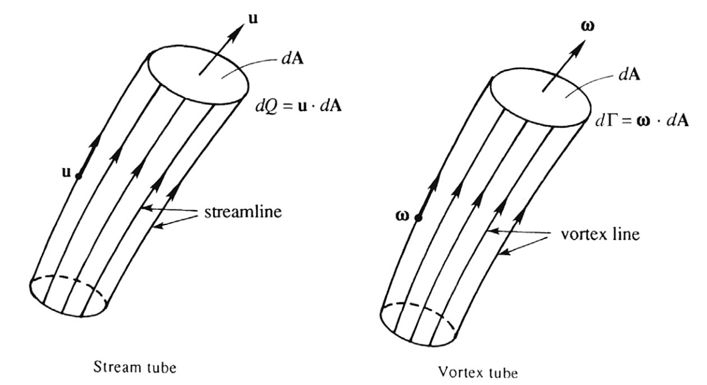
여기서, Vortex tube 전체 volume의 divergence of w 를 체적분 한후,
Gauss's Theorem으로 체적분을 면적분으로 바꾸어 주자.
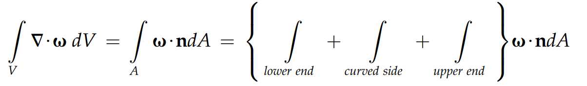
여기서 curved side는 바로, vortex tube의 옆면을 의미하는데,
옆면의 법선벡터 n과 w는 항상 수직하므로, 내적 = 0 이다.
따라서, lower upper end 항만 남게 된다.
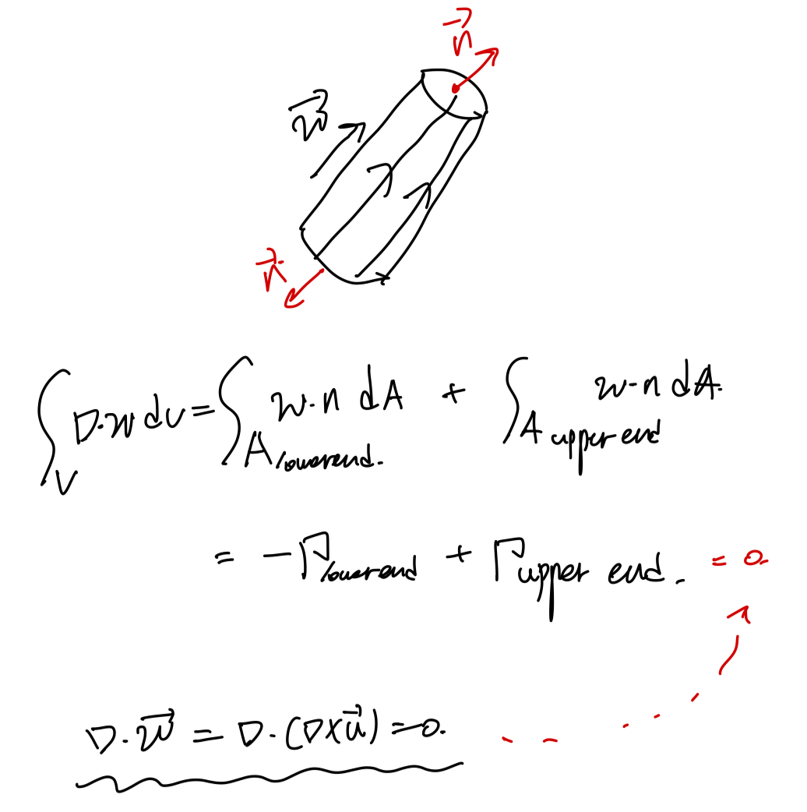
여기서, lower end 의 법선벡터가 w와 반대방향인 것만 고려한 후,
circulation의 정의를 이용하여 나타낼 수 있고,
가장 중요한 curl의 divergence = 0 인 것을 이용하면,
결론적으로,
lower circulation = upper circulation이 성립된다.
이를 다르게 해석하면,
유체 내부에서 vortexline은 끊김 없이 길게 extend되고,
이는 circulation이 tube안의 어느 단면에서든 일정함을 통해서
알 수 있다.
(단, 고체 surface or free surface에 의해서는 끊길 수 있음)
이제 실제 회전 유동에 대해서 살펴보자.
Solid wall의 회전에 의해서 회전하고 있는 유체의
유동에 대해서 살펴보자.
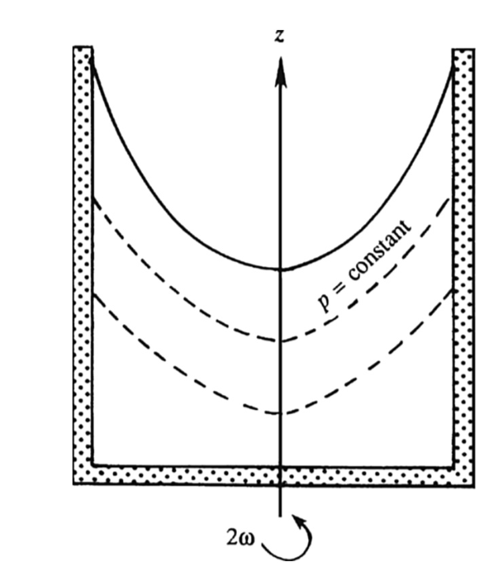
위에서
살펴본 profile은 다음과 같을 것이고,
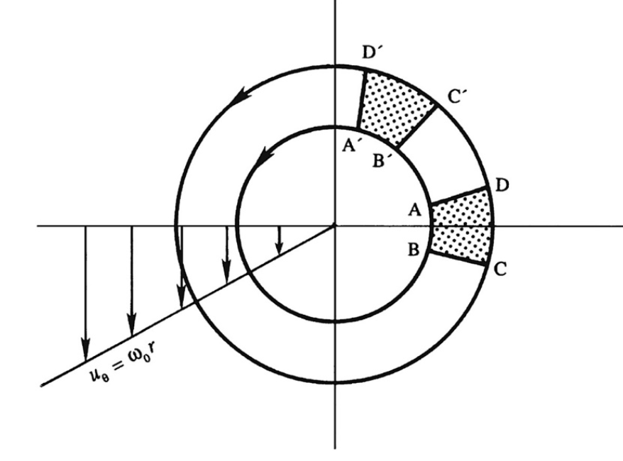
실린더 coordinate로 살펴보면,
ur = 0, u
θ= rw0(w0: angular velocity)임을 알 수 있다.
따라서, strain rate tensor 는 전부 0이므로
우리는 비점성 유동이라는 것을 알 수 있다.
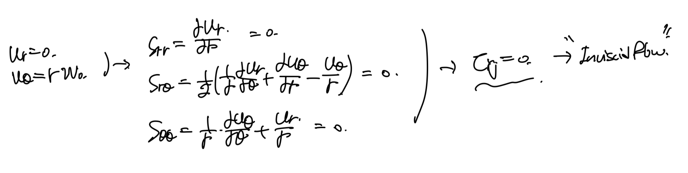
여기에 incompressible, steady 가정만 더 해주면
우리는 모멘텀 방정식을 Euler's equation으로 사용 할 수 있다.
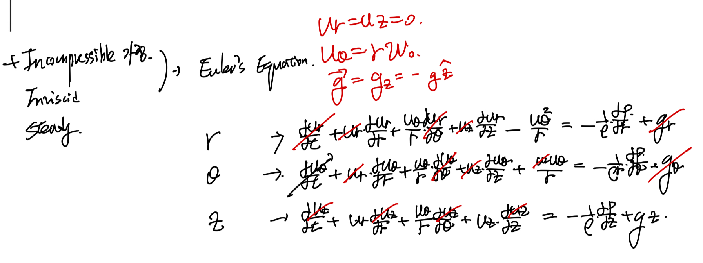
위에서 구한 속도장을 대입해주면,
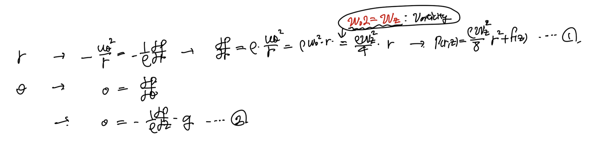
위와 같이 정리가 되고, 이제 적분을 통한 1번 식을 2번식에 대입해주자.
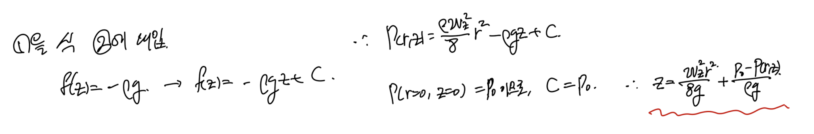
최종적으로, 압력,r,z의 관계식이 나오게 된다.
즉, 압력이 일정한 등압선은 포물선 형태임을 확인 할 수 있다.
P0를 그냥 constant로 설정하면,
베르누의 방정식과 비슷하게 생겼지만,
처음 속도항의 부호가 다른 식이 도출된다.
(즉 베르누의 성립 x)
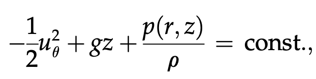
이번에는 Irrotational vortex
의 유동에 대해서 알아보자.
아주 특이한 유동인데,
보이는 것처럼,
ABCD -> A'B'C'D' 으로 유체가 이동할때,
deform은 하였지만,
irrotational 한 유동이다.
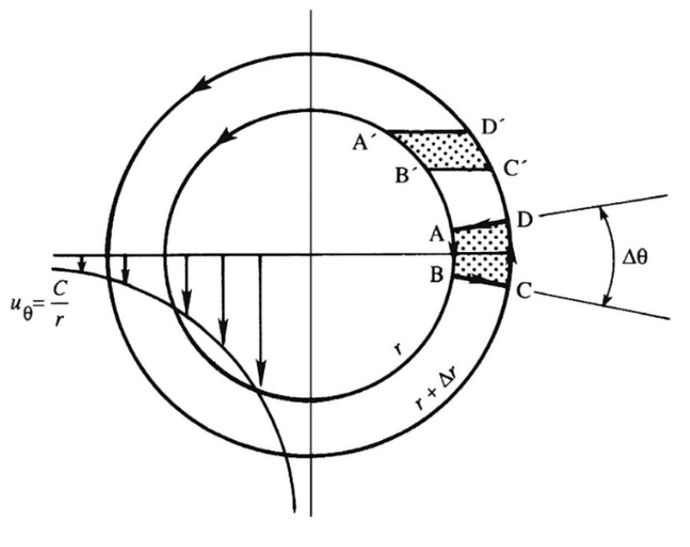
아주 특이한 것은 r= 0 에서는 w -> infinity로 굉장히 회전력이 강하다;;
아무튼 이런 특이한 유동을 분석해보면,
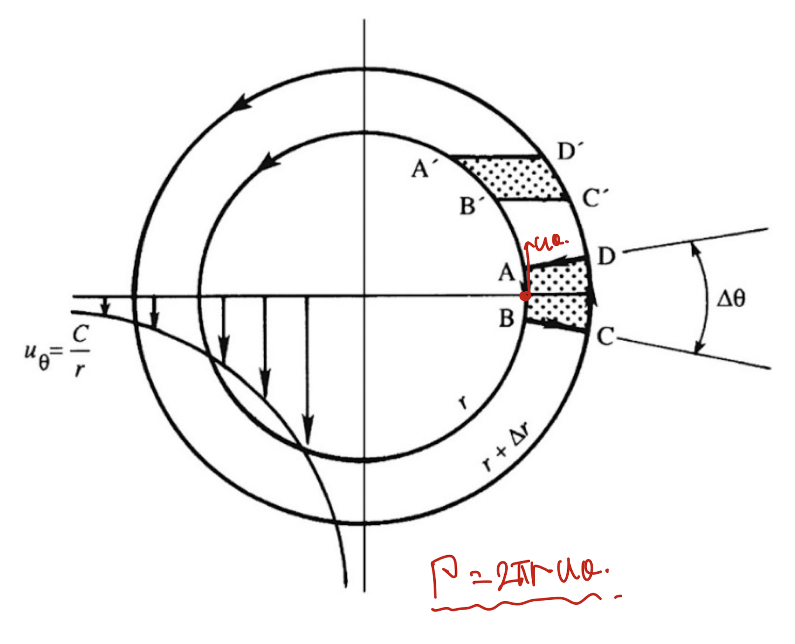
먼저, circulation을 다음과 같이 나타낼 수 있고,
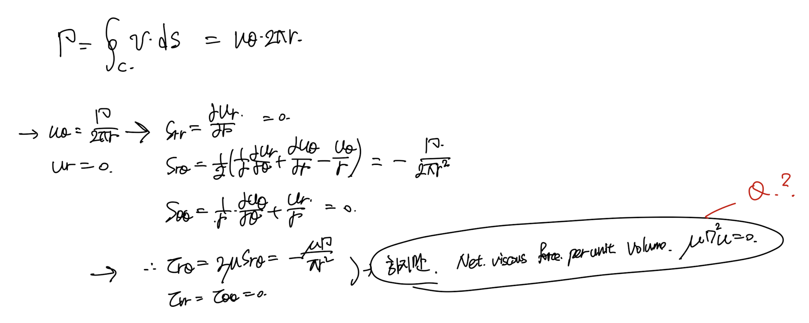
Strain rate tensor를 통해서 shear stress term들을 계산 할 수 있다.
(위 shear stress로 deform)
아주 신기한 것은, r>0일때
a fluid element
net shear stress = 0
이유는, 유체입자가 회전하지 않기 때문에,
shear stress의 방향이 서로 반대방향으로 계속해서 작용한다.
따라서, 비점성 유동해석이 가능하다.
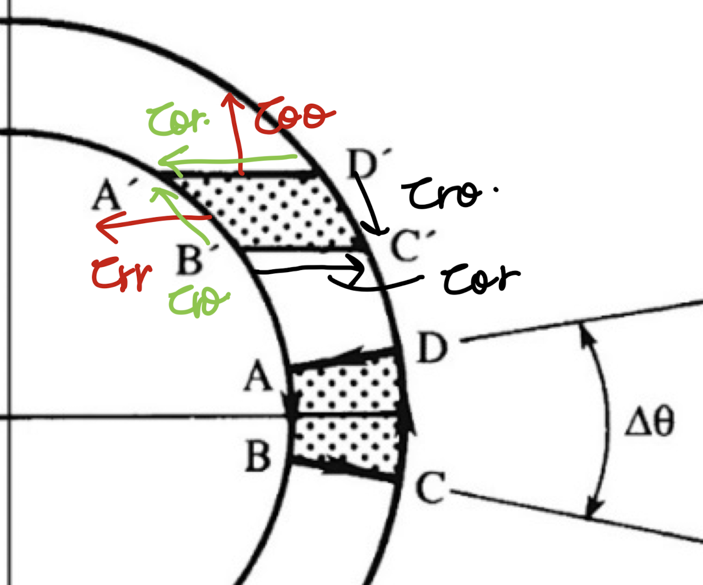
비점성유동이라는 것을 확인하였고,
여기에 Incompressible, steady-state assumption만 추가해주면
아까 위에서 증명한 solid rotation flow와 동일하게
오일러 방정식이 적용가능하다.
똑같이 적용해주면 다음 1,2식이 도출된다.
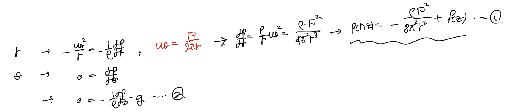
1,2식이 나오게 되고 위 두식을 연립하면
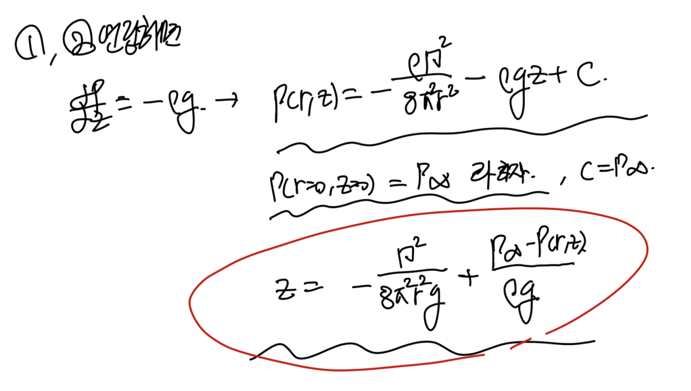
압력, z,r의 식이 도출된다.
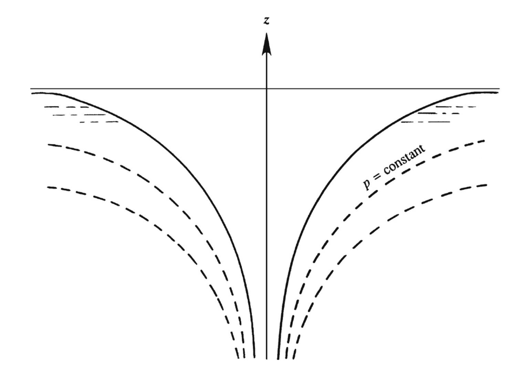
irrotational vortex 등압선.
위식의 P infi - const로 바꾸고, circulation을 다시 u theat로 바꾸면
다음과 같이 베르누의 방정식이 도출된다.
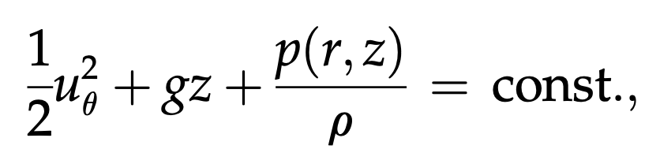
{% endraw %}